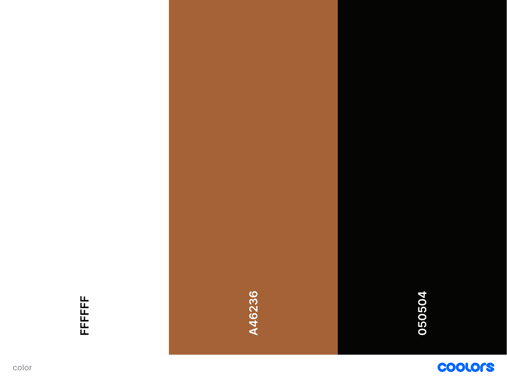

Site Name
The name of the site is Good Bread Bakery. This name was choosen beacuse was the first name that came to the mind of the founder, and it reflects waht the costumers sayabout the bread.
Site Purpose
The purpose of the site is to provide information about the bakery, its products, and services. It aims to attract customers by showcasing the bakery's offerings and creating a welcoming online presence.
Scenarios
The site will be used by customers looking for information about the bakery, its products, and services. It will also be used by the bakery staff to update product information and manage customer inquiries. The site will provide a user-friendly interface for easy navigation and access to information.
Color Schema
Typography
The typography used in the site is Edu SA Hand, which is a handwritten font that gives a personal touch to the bakery's branding. It is used for headings and important text to create a friendly and approachable feel.